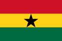

|  |
Gana |
A seleção ganesa participou de três edições da Copa do Mundo de futebol. Desde 2006 Gana participa consecutivamente do Mundial de Futebol. A seleção de Gana chegou às oitavas-de-final na sua primeira participação em 2006. Em 2010 foi eliminada nas quartas-de-final e em 2014 foi eliminada na Primeira Fase.
| DATA/HORA | ESTÁDIO | |ADVERSÁRIO |
| 24/11/2022 às 13h00 | Estádio 974 | Portugal |
| 28/11/2022 às 16h00 | Estádio da Cidade da Educação | Coreia do Sul |
| 02/12/2022 às 12h00 | Estádio Al Janoub | Uruguai |